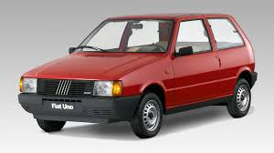
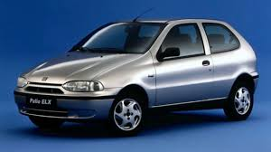
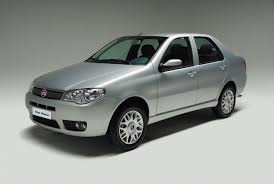
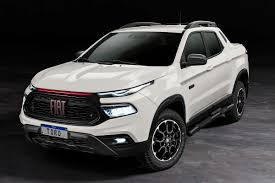
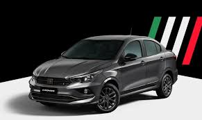

Uno

El Fiat Uno (1983) revolucionó el concepto de
coche urbano compacto al combinar un diseño exterior cúbico tipo "elefantito" —que maximizaba el espacio interior— con alta tecnología de producción automatizada (Robogate). Fue concebido como un vehículo práctico, eficiente y cómodo, ganando el premio Coche del Año en 1984 por su habitabilidad y soluciones innovadoras.
Palio

El Fiat Palio
fue un vehículo global diseñado por Fiat en (1996), enfocado en mercados emergentes para ofrecer un diseño compacto, versátil y confiable. Se consolidó como un ícono popular en Latinoamérica, enfocado en familias, caracterizado por un bajo consumo de combustible y, con el tiempo, su fiabilidad.
Siena

El Fiat Siena es un sedán compacto derivado del Fiat Palio, producido entre 1996 y 2017 (y hasta 2021 en versión Grand Siena), enfocado en la robustez, amplio baúl y mantenimiento económico. Diseñado principalmente para mercados emergentes, se consolidó como un vehículo familiar práctico y funcional, con motores 1.4 y 1.6 litros.
Toro

El "concepto" de la Fiat Toro se define principalmente a través del término SUP (Sport Utility Pick-up). Este modelo, lanzado originalmente en 2016, fue diseñado para romper la dicotomía entre las camionetas de trabajo y los vehículos familiares de ciudad.Introdujo elementos distintivos como la puerta de caja de doble apertura lateral (en lugar de la clásica tapa hacia abajo) y un sistema de iluminación LED dividido que marcó tendencia en la marca.
Cronos

El Fiat Cronos es un sedán compacto diseñado para el mercado latinoamericano que combina elegancia italiana, habitabilidad y eficiencia. Destaca por ser el líder en ventas en Argentina, ofreciendo un baúl amplio de 525 litros, motores eficientes (como el 1.3 Firefly) y tecnología de conectividad, posicionado como una opción racional y moderna para familias.